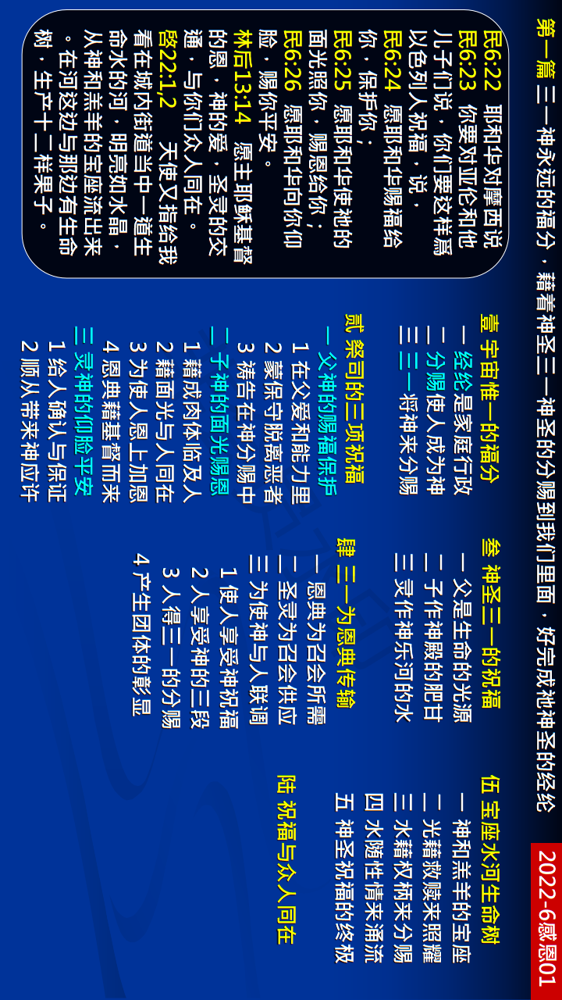

第一篇 三一神永远的福分，借着神圣三一神圣地分赐到我们里面，好完成祂神圣的经纶
前言
圣经中支配并管制我们的异象，乃是神永远 的经纶─三一神在祂神圣的三一里，将祂自 己分赐到祂所拣选并救赎的人里面，为着建 造基督的身体，豫备基督的新妇，带进神的国度，终极完成于新耶路撒冷，直到永远。 我们需要这把钥匙来开启圣经的每一卷书， 并藉这把钥匙，把我们七倍加强的带到对这 神圣的分赐有更多的经历里，好完成祂的经 纶。
真理要点(鸟瞰)
壹 宇宙惟一的福分：①神圣经纶的内容②神圣分赐的结果③神圣分赐的进行
贰 永远福分的表样：①与父有关的祝福②与子有关的祝福③与灵有关的祝福
叁 永远福分的应验：①父神的爱作源头②基督的恩作肥甘③灵的交通作河水
肆 永远福分的三段：①林后强调主的恩②我们生活的供应③神作我们的享受
伍 永远福分的完成：①在永世里的供应②神圣之光的照亮③元首权柄的管理 ④神圣性情的道路⑤神人联调的合并
陆 永远福分的应用：转向三一神自己
经历应用(操练)
我们不该以宗教的方式向主祷告，而该亲密的和祂谈话， 这样的祷告，会保守我们在祂的同在里，甚至使我们与 祂是一。如果我们天天这样实行与主说话，神圣的馨香之气就会浸润我们，膏油就会膏我们、印我们，那灵的 『墨』就会浸透我们，神圣的光也会照明我们。结果， 我们就完全为三一神所浸润。然后，我们就会享受父的 爱，子的恩，圣灵的交通，并且我们就能把祂分赐给人。
负担
我的负担就是要你们清楚看见，神的经纶就是要把祂自 己作成人，又把我们这些祂所造的人作成神，叫祂自己 人化，叫我们众人神化。结果，祂和我们，我们和祂， 都成了神人。所以作好人、作属灵人、作圣人是不彀的， 今天神所要的不是这些，祂所要乃是神人。不要盼望修 改自己，因为神不要你作好人，祂要你作神人。祂是你 的生命和一切，目的就是要你能彰显祂，活出祂来。
